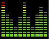

My Music Page
Album Reccomendations
Below here is a list of some of my favorite albums, as well as a the genre and few words about each one. Feel free to have a listen if you would like!


Ineffable Mysteries From Shpongleland
One of the more "chill" albums on this list, Ineffable Mysteries Froom Shpongleland has a great mix of relaxing and energetic tracks that just about anyone can get behind.
Legend Of The Black Shawarma
Infected Mushroom is one of my favorite bands of all time, so picking one album is relatively difficult. I have chosen Legend Of The Black Shawarms since it is definitely one of their most approachable albums to newcomers. If you like a good mix of electronic and rock elements. Infected has done everything, so you're bound to find something that fits your style.
The Nightmare Connector
This one is a bit on the heavier side, with The Nightmare Connector being a realtively industrial and dark fare for drum and bass. Nonetheless, it is a super well produced album with incredible sound design and a constant dark heir to it. I suggest this one if you're looking for something a bit more intense.
Hallelujah
Out of all of these, Hallelujah is probably the most indescribable album on this list. It is super intense and invigorating, implementing classical and baroque elements into intense, pounding metal and crazy unpredictable breaks. Nothing I say can quite do this one justice, I would suggest hearing it yourself if you're curious.
Evil Magic
Evil Magic is one of those albums I can't really justify being that obsessed with, other than the fact that I believe it's one of the most infectiously energetic albums I have ever heard. Check this one out if you're looking for something that can kick your brain into overdrive.
A Dada
A Dada is kinda in line with Hallelujah in terms of frantic energy, but with an entirely different tone, utilizing a lot of childrens toys and instruments for most of the album. I highly suggest this one if youre looking for something with a sense of almost demented whimsy.
Anesthesie international
I don't really even know what it is about this album, but Anesthesie International is just a weird guilty pleasure. Though the "frenchcore" listed underneath the genre may scare you, this album is definitely pretty tame when you compare it to the rest of Micropoint's discography. Regardless, this album carries a kind of dark, yet groovy energy. I highly suggest this if youre into oldschool hardcore/gabber.
Hold Your Colour
Hold Your Colour is one of the most defining albums of my life, as it is the thing that got me interested in EDM as a whole. Many consider this to be one of the best Drum and Bass albums of all time, and for good reason. This album has the perfect mix of euphoric breakbeats and relaxing ambience, while still carrying an insane amount of energy to it. I strongly suggest listening to this if you haven't already.
Converting Vegetarians
Converting Vegetarians is a long one, but personally I consider it to be one of the best electronic albums ever. CD 1 (The Trance Side) is easy for many to dismiss, as it is relatively stand fare for Infected Mushroom, but CD 2 (The Other Side) is arguably some of the best stuff they've ever made. I highly suggest at least listening to the second half of this album, or listening to it the entire way through if you can.
Rossz Csillag Alatt Szuletett
I don't really have a proper way to convey how insanely good this album is to me, but if you are into anything experimental and complex, I highly suggest this one. If there is any Venetian Snares album to listen to, I think most would agree that this is the one.